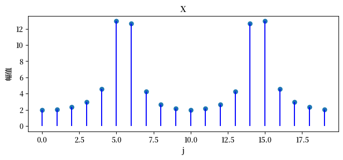
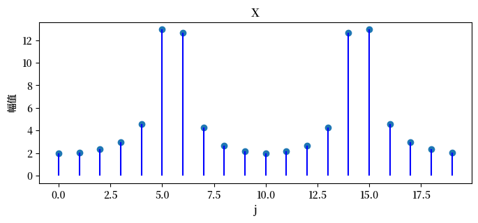

4. 循环矩阵#
4.1. 概述#
本讲座介绍循环矩阵及其一些性质。
循环矩阵具有特殊的结构，这种结构将它们与一些有用的概念联系起来，包括：
卷积
傅里叶变换
置换矩阵
由于这些联系，循环矩阵在机器学习中被广泛使用，例如在图像处理中。
我们首先导入一些Python包：
import numpy as np
from numba import jit
import matplotlib.pyplot as plt
import matplotlib as mpl
FONTPATH = "fonts/SourceHanSerifSC-SemiBold.otf"
mpl.font_manager.fontManager.addfont(FONTPATH)
plt.rcParams['font.family'] = ['Source Han Serif SC']
np.set_printoptions(precision=3, suppress=True)
4.2. 构造循环矩阵#
要构造一个 \(N \times N\) 的循环矩阵，我们只需要第一行，比如：
设置第一行的元素后，循环矩阵的其余行按以下方式确定：
也可以通过创建上述矩阵的转置来构造循环矩阵，在这种情况下只需要指定第一列。
让我们编写一些Python代码来生成循环矩阵：
@jit
def construct_cirlulant(row):
N = row.size
C = np.empty((N, N))
for i in range(N):
C[i, i:] = row[:N-i]
C[i, :i] = row[N-i:]
return C
# 一个简单的例子，当 N = 3 时
construct_cirlulant(np.array([1., 2., 3.]))
array([[1., 2., 3.],
[3., 1., 2.],
[2., 3., 1.]])
4.2.1. 循环矩阵的一些性质#
以下是一些有用的性质：
假设 \(A\) 和 \(B\) 都是循环矩阵。那么可以验证：
循环矩阵的转置是循环矩阵
\(A + B\) 是循环矩阵
\(A B\) 是循环矩阵
\(A B = B A\)
现在考虑一个第一行为
的循环矩阵，并考虑一个向量
向量 \(c\) 和 \(a\) 的卷积定义为向量 \(b = c * a \)，其分量为
我们使用 \(*\) 来表示通过方程 (4.2) 描述的卷积计算。
可以验证向量 \(b\) 满足
其中 \(C^T\) 是方程 (4.1) 中定义的循环矩阵的转置。
4.3. 与置换矩阵的联系#
构造循环矩阵的一个好方法是使用置换矩阵。
在定义置换矩阵之前，我们先定义置换。
非负整数集 \(\{0, 1, 2, \ldots \}\) 的置换是该集合到自身的一一映射。
集合 \(\{1, 2, \ldots, n\}\) 的置换重新排列了该集合中的 \(n\) 个整数。
置换矩阵是通过根据数字 \(1\) 到 \(n\) 的置换来置换 \(n \times n\) 单位矩阵的行而获得的。
因此，每一行和每一列都恰好包含一个 \(1\)，其余位置都是 \(0\)。
每个置换都对应一个唯一的置换矩阵。
例如，\(N \times N\) 矩阵
作为一个循环移位算子，当应用于 \(N \times 1\) 向量 \(h\) 时，将第 \(2\) 行到第 \(N\) 行的元素向上移动一行，并将第 \(1\) 行的元素移动到第 \(N\) 行。
方程 (4.3) 中定义的循环移位置换矩阵 \(P\) 的特征值可以通过构造
并求解
来计算。
特征值 \(\lambda_i\) 可以是复数。
这些特征值 \(\lambda_i\) 的模 \(\mid \lambda_i \mid\) 都等于 \(1\)。
因此，方程 (4.3) 中定义的置换矩阵 \(P\) 的奇异值都等于 \(1\)。
可以验证置换矩阵是正交矩阵：
4.4. Python示例#
让我们编写一些Python代码来说明这些概念：
@jit
def construct_P(N):
P = np.zeros((N, N))
for i in range(N-1):
P[i, i+1] = 1
P[-1, 0] = 1
return P
P4 = construct_P(4)
P4
array([[0., 1., 0., 0.],
[0., 0., 1., 0.],
[0., 0., 0., 1.],
[1., 0., 0., 0.]])
# 计算特征值和特征向量
𝜆, Q = np.linalg.eig(P4)
for i in range(4):
print(f'𝜆{i} = {𝜆[i]:.1f} \nvec{i} = {Q[i, :]}\n')
𝜆0 = -1.0+0.0j
vec0 = [-0.5+0.j 0.5+0.j 0.5-0.j -0.5+0.j]
𝜆1 = -0.0+1.0j
vec1 = [ 0.5+0.j -0. +0.5j -0. -0.5j -0.5+0.j ]
𝜆2 = -0.0-1.0j
vec2 = [-0.5+0.j -0.5-0.j -0.5+0.j -0.5+0.j]
𝜆3 = 1.0+0.0j
vec3 = [ 0.5+0.j 0. -0.5j 0. +0.5j -0.5+0.j ]
在下面的图中，我们将在复平面上展示移位置换矩阵的特征值。
这些特征值均匀分布在单位圆上。
它们是**\(n\) 次单位根**，意味着它们是满足 \(z^n =1\) 的 \(n\) 个复数 \(z\)，其中 \(z\) 是一个复数。
特别地，\(n\) 次单位根是
其中 \(j\) 表示纯虚数单位。
fig, ax = plt.subplots(2, 2, figsize=(10, 10))
for i, N in enumerate([3, 4, 6, 8]):
row_i = i // 2
col_i = i % 2
P = construct_P(N)
𝜆, Q = np.linalg.eig(P)
circ = plt.Circle((0, 0), radius=1, edgecolor='b', facecolor='None')
ax[row_i, col_i].add_patch(circ)
for j in range(N):
ax[row_i, col_i].scatter(𝜆[j].real, 𝜆[j].imag, c='b')
ax[row_i, col_i].set_title(f'N = {N}')
ax[row_i, col_i].set_xlabel('实部')
ax[row_i, col_i].set_ylabel('虚部')
plt.show()
对于系数向量 \(\{c_i\}_{i=0}^{n-1}\)，\(P\) 的特征向量也是
的特征向量。
考虑一个例子，其中 \(N=8\) 且 \(w = e^{-2 \pi j / N}\)。
可以验证 \(P_{8}\) 的特征向量矩阵 \(F_8\) 是
矩阵 \(F_8\) 定义了一个离散傅里叶变换。
为了将其转换为正交特征向量矩阵，我们可以简单地通过将每个元素除以 \(\sqrt{8}\) 来归一化。
仔细观察上面 \(F_8\) 的第一列来理解这个事实
对应于每个特征向量的特征值按顺序是 \(\{w^{j}\}_{j=0}^{7}\)。
def construct_F(N):
w = np.e ** (-complex(0, 2*np.pi/N))
F = np.ones((N, N), dtype=complex)
for i in range(1, N):
F[i, 1:] = w ** (i * np.arange(1, N))
return F, w
F8, w = construct_F(8)
w
(0.7071067811865476-0.7071067811865475j)
F8
array([[ 1. +0.j , 1. +0.j , 1. +0.j , 1. +0.j ,
1. +0.j , 1. +0.j , 1. +0.j , 1. +0.j ],
[ 1. +0.j , 0.707-0.707j, 0. -1.j , -0.707-0.707j,
-1. -0.j , -0.707+0.707j, -0. +1.j , 0.707+0.707j],
[ 1. +0.j , 0. -1.j , -1. -0.j , -0. +1.j ,
1. +0.j , 0. -1.j , -1. -0.j , -0. +1.j ],
[ 1. +0.j , -0.707-0.707j, -0. +1.j , 0.707-0.707j,
-1. -0.j , 0.707+0.707j, 0. -1.j , -0.707+0.707j],
[ 1. +0.j , -1. -0.j , 1. +0.j , -1. -0.j ,
1. +0.j , -1. -0.j , 1. +0.j , -1. -0.j ],
[ 1. +0.j , -0.707+0.707j, 0. -1.j , 0.707+0.707j,
-1. -0.j , 0.707-0.707j, -0. +1.j , -0.707-0.707j],
[ 1. +0.j , -0. +1.j , -1. -0.j , 0. -1.j ,
1. +0.j , -0. +1.j , -1. -0.j , 0. -1.j ],
[ 1. +0.j , 0.707+0.707j, -0. +1.j , -0.707+0.707j,
-1. -0.j , -0.707-0.707j, 0. -1.j , 0.707-0.707j]])
# 归一化
Q8 = F8 / np.sqrt(8)
# 验证正交性（酉性）
Q8 @ np.conjugate(Q8)
array([[ 1.+0.j, -0.+0.j, -0.+0.j, -0.+0.j, 0.+0.j, 0.+0.j, 0.+0.j,
0.+0.j],
[-0.-0.j, 1.+0.j, -0.+0.j, -0.+0.j, -0.+0.j, 0.+0.j, 0.+0.j,
0.+0.j],
[-0.-0.j, -0.-0.j, 1.+0.j, -0.+0.j, -0.+0.j, -0.+0.j, 0.+0.j,
0.+0.j],
[-0.-0.j, -0.-0.j, -0.-0.j, 1.+0.j, -0.+0.j, -0.+0.j, -0.+0.j,
-0.+0.j],
[ 0.-0.j, -0.-0.j, -0.-0.j, -0.+0.j, 1.+0.j, -0.+0.j, -0.+0.j,
-0.+0.j],
[ 0.-0.j, 0.-0.j, -0.-0.j, -0.-0.j, -0.-0.j, 1.+0.j, -0.+0.j,
-0.+0.j],
[ 0.-0.j, 0.-0.j, 0.-0.j, -0.-0.j, -0.-0.j, -0.-0.j, 1.+0.j,
-0.+0.j],
[ 0.-0.j, 0.-0.j, 0.-0.j, -0.-0.j, -0.-0.j, -0.-0.j, -0.-0.j,
1.+0.j]])
让我们验证 \(Q_{8}\) 的第 \(k\) 列是 \(P_{8}\) 的特征向量，对应的特征值是 \(w^{k}\)。
P8 = construct_P(8)
diff_arr = np.empty(8, dtype=complex)
for j in range(8):
diff = P8 @ Q8[:, j] - w ** j * Q8[:, j]
diff_arr[j] = diff @ diff.T
diff_arr
array([ 0.+0.j, -0.+0.j, -0.+0.j, -0.+0.j, -0.+0.j, -0.+0.j, -0.+0.j,
-0.+0.j])
4.5. 关联置换矩阵#
接下来，我们执行计算来验证方程 (4.1) 中定义的循环矩阵 \(C\) 可以写成
并且 \(P\) 的每个特征向量也是 \(C\) 的特征向量。
我们用 \(N=8\) 的情况来说明这一点。
c = np.random.random(8)
c
array([0.76 , 0.141, 0.653, 0.156, 0.344, 0.453, 0.961, 0.532])
C8 = construct_cirlulant(c)
计算 \(c_{0} I + c_{1} P + \cdots + c_{n-1} P^{n-1}\)。
N = 8
C = np.zeros((N, N))
P = np.eye(N)
for i in range(N):
C += c[i] * P
P = P8 @ P
C
array([[0.76 , 0.141, 0.653, 0.156, 0.344, 0.453, 0.961, 0.532],
[0.532, 0.76 , 0.141, 0.653, 0.156, 0.344, 0.453, 0.961],
[0.961, 0.532, 0.76 , 0.141, 0.653, 0.156, 0.344, 0.453],
[0.453, 0.961, 0.532, 0.76 , 0.141, 0.653, 0.156, 0.344],
[0.344, 0.453, 0.961, 0.532, 0.76 , 0.141, 0.653, 0.156],
[0.156, 0.344, 0.453, 0.961, 0.532, 0.76 , 0.141, 0.653],
[0.653, 0.156, 0.344, 0.453, 0.961, 0.532, 0.76 , 0.141],
[0.141, 0.653, 0.156, 0.344, 0.453, 0.961, 0.532, 0.76 ]])
C8
array([[0.76 , 0.141, 0.653, 0.156, 0.344, 0.453, 0.961, 0.532],
[0.532, 0.76 , 0.141, 0.653, 0.156, 0.344, 0.453, 0.961],
[0.961, 0.532, 0.76 , 0.141, 0.653, 0.156, 0.344, 0.453],
[0.453, 0.961, 0.532, 0.76 , 0.141, 0.653, 0.156, 0.344],
[0.344, 0.453, 0.961, 0.532, 0.76 , 0.141, 0.653, 0.156],
[0.156, 0.344, 0.453, 0.961, 0.532, 0.76 , 0.141, 0.653],
[0.653, 0.156, 0.344, 0.453, 0.961, 0.532, 0.76 , 0.141],
[0.141, 0.653, 0.156, 0.344, 0.453, 0.961, 0.532, 0.76 ]])
现在让我们计算两种不同方式构造的循环矩阵之间的差异。
np.abs(C - C8).max()
0.0
与特征值 \(w^{k-1}\) 相关的 \(P_{8}\) 的第 \(k\) 列是 \(C_{8}\) 的特征向量，对应的特征值是 \(\sum_{h=0}^{7} c_{j} w^{h k}\)。
𝜆_C8 = np.zeros(8, dtype=complex)
for j in range(8):
for k in range(8):
𝜆_C8[j] += c[k] * w ** (j * k)
𝜆_C8
array([ 4.001+0.j , 0.461+0.795j, -0.51 +0.095j, 0.37 +0.178j,
1.436+0.j , 0.37 -0.178j, -0.51 -0.095j, 0.461-0.795j])
我们可以通过比较 C8 @ Q8[:, j] 和 𝜆_C8[j] * Q8[:, j] 来验证这一点。
# 验证
for j in range(8):
diff = C8 @ Q8[:, j] - 𝜆_C8[j] * Q8[:, j]
print(diff)
[ 0.+0.j 0.+0.j -0.+0.j -0.+0.j -0.+0.j 0.+0.j -0.+0.j -0.+0.j]
[-0.+0.j -0.-0.j -0.-0.j -0.-0.j -0.-0.j -0.+0.j -0.+0.j 0.+0.j]
[-0.+0.j -0.-0.j -0.-0.j -0.+0.j 0.+0.j 0.-0.j -0.-0.j -0.+0.j]
[ 0.+0.j -0.-0.j -0.-0.j -0.+0.j 0.-0.j -0.-0.j 0.-0.j -0.-0.j]
[ 0.+0.j 0.-0.j 0.-0.j 0.-0.j -0.-0.j 0.+0.j 0.-0.j 0.+0.j]
[-0.+0.j 0.-0.j 0.-0.j 0.+0.j -0.-0.j 0.-0.j -0.-0.j 0.-0.j]
[ 0.+0.j 0.-0.j 0.-0.j 0.+0.j -0.+0.j -0.-0.j 0.-0.j 0.+0.j]
[ 0.+0.j 0.-0.j 0.-0.j 0.-0.j 0.-0.j 0.+0.j 0.+0.j -0.+0.j]
4.6. 离散傅里叶变换#
离散傅里叶变换（DFT）允许我们将离散时间序列表示为复正弦波的加权和。
考虑一个包含 \(N\) 个实数的序列 \(\{x_j\}_{j=0}^{N-1}\)。
离散傅里叶变换将 \(\{x_j\}_{j=0}^{N-1}\) 映射到复数序列 \(\{X_k\}_{k=0}^{N-1}\)，其中
def DFT(x):
"离散傅里叶变换。"
N = len(x)
w = np.e ** (-complex(0, 2*np.pi/N))
X = np.zeros(N, dtype=complex)
for k in range(N):
for n in range(N):
X[k] += x[n] * w ** (k * n)
return X
考虑以下示例。
x = np.zeros(10)
x[0:2] = 1/2
x
array([0.5, 0.5, 0. , 0. , 0. , 0. , 0. , 0. , 0. , 0. ])
应用离散傅里叶变换。
X = DFT(x)
X
array([ 1. +0.j , 0.905-0.294j, 0.655-0.476j, 0.345-0.476j,
0.095-0.294j, -0. +0.j , 0.095+0.294j, 0.345+0.476j,
0.655+0.476j, 0.905+0.294j])
我们可以绘制数字序列的幅值和相关的离散傅里叶变换。
def plot_magnitude(x=None, X=None):
data = []
names = []
xs = []
if (x is not None):
data.append(x)
names.append('x')
xs.append('n')
if (X is not None):
data.append(X)
names.append('X')
xs.append('j')
num = len(data)
for i in range(num):
n = data[i].size
plt.figure(figsize=(8, 3))
plt.scatter(range(n), np.abs(data[i]))
plt.vlines(range(n), 0, np.abs(data[i]), color='b')
plt.xlabel(xs[i])
plt.ylabel('幅值')
plt.title(names[i])
plt.show()
plot_magnitude(x=x, X=X)
逆傅里叶变换将 \(x\) 的傅里叶变换 \(X\) 转换回 \(x\)。
逆傅里叶变换定义为
def inverse_transform(X):
N = len(X)
w = np.e ** (complex(0, 2*np.pi/N))
x = np.zeros(N, dtype=complex)
for n in range(N):
for k in range(N):
x[n] += X[k] * w ** (k * n) / N
return x
inverse_transform(X)
array([ 0.5+0.j, 0.5-0.j, -0. -0.j, -0. -0.j, -0. -0.j, -0. -0.j,
-0. +0.j, -0. +0.j, -0. +0.j, -0. +0.j])
另一个例子是
由于 \(N=20\)，我们不能使用 \(\frac{1}{20}\) 的整数倍来表示频率 \(\frac{11}{40}\)。
为了处理这种情况，我们最终将使用DFT中所有可用的 \(N\) 个频率。
由于 \(\frac{11}{40}\) 在 \(\frac{10}{40}\) 和 \(\frac{12}{40}\) 之间（每个都是 \(\frac{1}{20}\) 的整数倍），DFT中的复系数在 \(k=5,6,15,16\) 处具有最大幅值，而不仅仅是在单个频率处。
N = 20
x = np.empty(N)
for j in range(N):
x[j] = 2 * np.cos(2 * np.pi * 11 * j / 40)
X = DFT(x)
plot_magnitude(x=x, X=X)
 

如果我们把最后一个例子改为 \(x_{n}=2\cos\left(2\pi\frac{10}{40}n\right)\) 会发生什么？
注意 \(\frac{10}{40}\) 是 \(\frac{1}{20}\) 的整数倍。
N = 20
x = np.empty(N)
for j in range(N):
x[j] = 2 * np.cos(2 * np.pi * 10 * j / 40)
X = DFT(x)
plot_magnitude(x=x, X=X)
如果我们将离散傅里叶变换表示为矩阵，我们会发现它等于置换矩阵 \(P_{N}\) 的特征向量矩阵 \(F_{N}\)。
我们可以使用 \(x_{n}=2\cos\left(2\pi\frac{11}{40}n\right),\ n=0,1,2,\cdots19\) 的例子来说明这一点。
N = 20
x = np.empty(N)
for j in range(N):
x[j] = 2 * np.cos(2 * np.pi * 11 * j / 40)
x
array([ 2. , -0.313, -1.902, 0.908, 1.618, -1.414, -1.176, 1.782,
0.618, -1.975, -0. , 1.975, -0.618, -1.782, 1.176, 1.414,
-1.618, -0.908, 1.902, 0.313])
首先使用求和公式将 \(x\) 变换为 \(X\)。
X = DFT(x)
X
array([2. +0.j , 2. +0.558j, 2. +1.218j, 2. +2.174j, 2. +4.087j,
2.+12.785j, 2.-12.466j, 2. -3.751j, 2. -1.801j, 2. -0.778j,
2. -0.j , 2. +0.778j, 2. +1.801j, 2. +3.751j, 2.+12.466j,
2.-12.785j, 2. -4.087j, 2. -2.174j, 2. -1.218j, 2. -0.558j])
现在让我们计算特征向量矩阵 \(F_{20}\) 与向量 \(x\) 的后乘结果，这个乘积应该等于序列 \(\{x_n\}_{n=0}^{N-1}\) 的傅里叶变换。
F20, _ = construct_F(20)
F20 @ x
array([2. +0.j , 2. +0.558j, 2. +1.218j, 2. +2.174j, 2. +4.087j,
2.+12.785j, 2.-12.466j, 2. -3.751j, 2. -1.801j, 2. -0.778j,
2. -0.j , 2. +0.778j, 2. +1.801j, 2. +3.751j, 2.+12.466j,
2.-12.785j, 2. -4.087j, 2. -2.174j, 2. -1.218j, 2. -0.558j])
同样，逆DFT可以表示为逆DFT矩阵 \(F^{-1}_{20}\)。
F20_inv = np.linalg.inv(F20)
F20_inv @ X
array([ 2. -0.j, -0.313+0.j, -1.902-0.j, 0.908-0.j, 1.618-0.j,
-1.414-0.j, -1.176+0.j, 1.782-0.j, 0.618-0.j, -1.975-0.j,
-0. +0.j, 1.975-0.j, -0.618-0.j, -1.782+0.j, 1.176+0.j,
1.414-0.j, -1.618-0.j, -0.908+0.j, 1.902+0.j, 0.313-0.j])